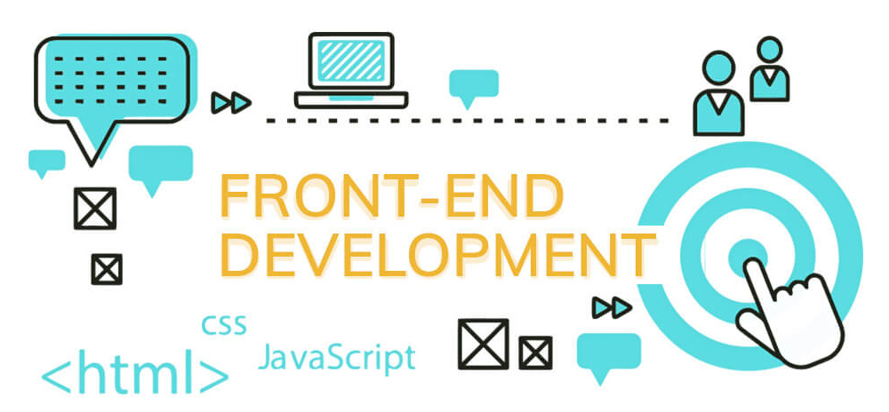

Co składa się na frontend?
Specjalista IT w zakresie frontendu musi znać trzy najważniejsze języki kodowania, czyli HTML, CSS i JavaScript. Każdy z nich spełnia inne funkcje w programowaniu stron i aplikacji:
- HTML – opisuje cel i znaczenie wszystkich bloków strony,
- CSS – język arkuszy stylów (ang. style sheet language), który odpowiada za wygląd strony (kształty, położenie i kolory użytych elementów),
- JavaScript – idealny do programowania funkcjonalności, ścieżki zachowań użytkowników i sprawnego działania strony.
- Angular - kompleksowy framework do projektowania oraz tworzenia wydajnych aplikacji typu SPA (Single Page Application) .
Natomiast Angular to kompleksowy framework do projektowania oraz tworzenia wydajnych aplikacji typu SPA (Single Page Application) . Napisany w języku TypeScript i wspierany oraz rozwijany przez Google. Dostarcza programiście zestaw gotowych do wykorzystania narzędzi i rozwiązań, które wystarczy uzupełnić własnym kodem i zmodyfikować w razie potrzeby:)